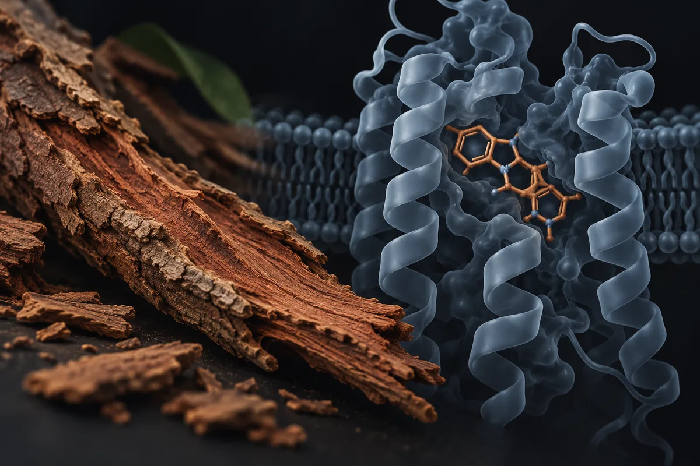

Ioimbina (cloridrato de ioimbina; casca de Pausinystalia)
O estudo de 86 homens com 71% contra 45% existe; o que não se diz é que, na disfunção de causa orgânica, a ioimbina mal supera o placebo.

Matériel expérimental. Lisez avant d’utiliser quoi que ce soit d’ici.
Rien sur cette page n’est une recommandation médicale, une prescription ou un plan de traitement. C’est une traduction organisée de protocoles qui circulent dans des communautés de recherche et, quand cela existe, de ce que des essais publiés ont testé. Les deux choses sont marquées différemment — et ne sont pas équivalentes.
La plupart des composés ici n’ont pas d’approbation de la FDA pour un usage humain. Plusieurs sont vendus avec l’étiquette « usage exclusivement en recherche », ce qui signifie qu’ils n’ont passé aucun contrôle de pureté, de stérilité ou de dosage pour une consommation par des personnes. Une dose décrite par la communauté n’est pas une dose validée : c’est ce que quelqu’un a rapporté avoir fait.
Parlez avec un professionnel de santé habilité avant d’envisager l’un de ces composés. Si vous en utilisez déjà un et ressentez quelque chose d’imprévu, consultez — n’attendez pas le prochain examen de routine.
Résumé
A ioimbina é um alcaloide da casca de uma árvore africana que bloqueia receptores alfa-2 adrenérgicos. O ensaio citado nos vídeos existe: 86 homens sem causa orgânica clara, 30 mg por dia por 8 semanas, resposta de 71% contra 45%. A meta-análise de 1998, com 7 ensaios, achou vantagem sobre o placebo. Mas na disfunção de causa orgânica os resultados foram marginais ou nulos, e a associação americana de urologia não a recomendou em 1996. Em suplementos, o teor variou de nada a 12,1 mg por dose, e há mortes e um derrame cerebral relatados.
Pourquoi cette page existe
A ioimbina aparece descrita em um vídeo curto sobre saúde masculina que vi publicado na internet, como a "casca de árvore" que médicos prescreviam antes do Viagra, "um dos remédios mais prescritos" para disfunção erétil. O vídeo cita um estudo com 86 homens, 30 mg por dia por 8 semanas e resposta de 71% contra 45% no placebo, "quase sem efeito colateral", e uma meta-análise de 7 estudos com "mais de 400 homens" em que ela "venceu o placebo com folga". A explicação dada para o sumiço é que "casca de árvore não tem patente".
Eu conferi. É um vídeo só, com 8 alegações verificáveis, e as duas fontes que ele cita existem. Nenhum número desta página veio da fonte secundária do site.
A ioimbina é um alcaloide indólico. Segundo a base LiverTox, dos Institutos Nacionais de Saúde dos EUA, ela vem da casca da árvore Pausinystalia yohimbe, da África Central. Os estudos clínicos usaram o cloridrato de ioimbina, um sal purificado, em comprimidos. Isso é diferente de pó ou extrato de casca.
O mecanismo é outro, e explica os efeitos colaterais
A ioimbina não age no óxido nítrico nem na enzima que a sildenafila e a tadalafila inibem. Segundo a revisão de Nowacka e colegas (2024) e o relato de Anderson e colegas (2013), ela é antagonista dos receptores alfa-2 adrenérgicos. Bloquear esses receptores aumenta a liberação de noradrenalina. É o mesmo mecanismo que, segundo a revisão de Tam e colegas (2001), explica os efeitos mais frequentes em doses altas: pressão mais alta, um leve efeito de ansiedade e mais vontade de urinar.
A farmacocinética é muito variável. Num estudo com 16 homens saudáveis, uma dose de 7,7 mg de tartarato de ioimbina (junto com arginina) deu pico no sangue entre 2,8 e 128 ng/mL, e a meia-vida média foi de cerca de 1 hora (Kernohan 2005).
Combien de preuves existent, vraiment
Os números abaixo foram levantados por mim em 16 de outubro de 2026, no PubMed e no ClinicalTrials.gov. A consulta de cada linha está ao lado do número, para qualquer pessoa repetir e me contradizer.
| Base | Requête | Résultat |
|---|---|---|
| PubMed | yohimbine OR yohimbe OR "Pausinystalia" | 25.224 artigos |
| PubMed | (yohimbine OR yohimbe) AND (erectile dysfunction OR impotence OR erectile) | 271 artigos |
| PubMed | (yohimbine OR yohimbe) AND (erectile dysfunction OR impotence OR erectile) AND (Randomized Controlled Trial[Publication Type] OR Meta-Analysis[Publication Type]) | 22 artigos |
| PubMed | (yohimbine OR yohimbe) AND (dietary supplements OR supplement) AND (adverse effects OR toxicity OR poisoning) | 52 artigos |
| ClinicalTrials.gov | intervenção: yohimbine OR yohimbe | 51 estudos registrados |
| ClinicalTrials.gov | intervenção: (yohimbine OR yohimbe) AND AREA[Phase]PHASE3 | 5 ensaios de fase 3 |
| ClinicalTrials.gov | intervenção: (yohimbine OR yohimbe) AND AREA[Condition]erectile dysfunction | 2 estudos registrados |
Lecture honnête de ces chiffres
- O número grande não é sobre ereção. Dos 25.224 artigos, 271 tratam de ereção ou impotência.
- A evidência em ereção é antiga. Dos 22 artigos de ereção marcados como ensaio ou meta-análise, 17 são de 1980 a 1999. Os poucos ensaios depois de 2000 testam a ioimbina misturada com arginina.
- Nenhum registro de fase 3 é de disfunção erétil. Os de fase 3 que li são de ansiedade social e fobias; dois são grandes ensaios cardiovasculares que a busca devolveu por engano. Os 2 registros de disfunção erétil são um estudo de ioimbina com naltrexona e um de bioequivalência de comprimidos de 5 mg, ambos sem resultado postado.
- Contagem de artigo mede atenção acadêmica, não evidência de desfecho.
Les études qui soutiennent les allégations
Segundo o PubMed, estes são os trabalhos clínicos concretos por trás do que se diz sobre a ioimbina. Leia o que cada um mediu, e em quantas pessoas.
| Étude | N | Contexte | Ce qui a été rapporté | Réserve |
|---|---|---|---|---|
| Vogt et al., 1997 Int J Impot Res 9(3):155-61 · PMID 9315493 | 86 | Disfunção sem causa orgânica ou psicológica clara; 30 mg/dia (5 mg × 2, 3 vezes ao dia) por 8 semanas; duplo-cego | Resposta de 71% contra 45% no placebo; só 7% acharam a tolerância regular ou ruim; nenhum evento grave | É o estudo citado no vídeo; população sem causa orgânica |
| Ernst e Pittler, 1998 (meta-análise) J Urol 159(2):433-6 · PMID 9649257 | 7 ensaios | Ioimbina sozinha contra placebo | Razão de chances 3,85 (o resumo publica o intervalo como "6,67 a 2,22"); eventos graves "infrequentes e reversíveis" | O resumo não informa o número de pacientes |
| Montague et al., 1996 (diretriz da associação americana de urologia) J Urol 156(6):2007-11 · PMID 8911378 | — | Disfunção orgânica; literatura de 1979 a 1994 | Eficácia "marginal"; "não deve ser recomendada" ao paciente-padrão com disfunção orgânica | Diretriz de 1996 |
| Morales et al., 1987 J Urol 137(6):1168-72 · PMID 3295302 | 100 | Disfunção orgânica; 18 mg/dia | Resposta de 42,6% contra 27,6%, sem significância estatística | Dose menor que a do estudo de 1997 |
| Reid et al., 1987 Lancet 2(8556):421-3 · PMID 2887726 | 48 | Disfunção psicogênica; 18 mg/dia por 10 semanas | Alguma melhora em 62% contra 16% no placebo | "Alguma melhora" é critério amplo |
| Kunelius et al., 1997 Urology 49(3):441-4 · PMID 9123711 | 29 | Disfunção mista; 36 mg/dia por 25 dias, cruzado | Resposta de 44% com ioimbina e 48% com placebo; sem diferença | Dose alta, sem efeito |
| Mann et al., 1996 Arch Sex Behav 25(1):1-16 · PMID 8714425 | 31 | 15 mg/dia por 7 semanas | Melhora subjetiva só no subgrupo sem causa orgânica; ereção noturna medida não mudou | Pequeno |
| Carey e Johnson, 1996 (meta-análises) Arch Sex Behav 25(4):341-60 · PMID 8836468 | — | Quatro meta-análises (controladas e não controladas, sozinha e combinada) | "Tendência consistente" a melhorar a ereção em relação ao placebo | Os autores apontam problemas de método na literatura |
| Lebret et al., 2002 Eur Urol 41(6):608-13 · PMID 12074777 | 45 | 6 mg de ioimbina, sozinha ou com 6 g de glutamato de arginina, 1–2 h antes da relação; cruzado | Domínio erétil do IIEF: 17,2 (combinação), 15,4 (ioimbina) e 14,1 (placebo); no IIEF, só a combinação diferiu do placebo (p = 0,006); na avaliação de pacientes e investigadores, a ioimbina sozinha também foi melhor | Estudo piloto |
| Tam et al., 2001 (revisão) Pharmacol Ther 91(3):215-43 · PMID 11744068 | — | Revisão clínica | Eficácia "apenas modesta" em monoterapia; efeitos de doses altas: pressão, ansiedade, micção | Poucos estudos bem desenhados, segundo os autores; dois autores assinam também os estudos da combinação de ioimbina com arginina (Lebret 2002; Kernohan 2005) |
| Cohen et al., 2016 Drug Test Anal 8(3-4):357-69 · PMID 26391406 | 49 marcas | Suplementos com ioimbe ou ioimbina vendidos em 7 grandes redes dos EUA | Ioimbina por dose de nada a 12,1 mg; só 11 marcas informavam a quantidade, quase todas erradas (23% a 147% do rótulo); 39% sem os outros alcaloides da planta | Mercado americano |
Doses utilisées dans des études humaines publiées
Ceci n'est pas une recommandation de dose : c'est le relevé de ce qui a été administré dans des études publiées, avec la finalité de chacune. Hors du contexte de l'étude, ces chiffres ne se transfèrent pas.
| Étude | Dose | Durée | Finalité de l'étude |
|---|---|---|---|
| Vogt et al., 1997 | 30 mg/dia de cloridrato de ioimbina (5 mg × 2, 3×/dia) | 8 semaines | Disfunção sem causa orgânica clara |
| Morales et al., 1987; Reid et al., 1987 | 18 mg/dia | 10 semanas (Reid) | Disfunção orgânica; disfunção psicogênica |
| Mann et al., 1996 | 15 mg/dia | 7 semanas | Disfunção orgânica e não orgânica |
| Kunelius et al., 1997 | 36 mg/dia | 25 dias | Disfunção mista |
| Lebret et al., 2002 | 6 mg sob demanda, com ou sem 6 g de glutamato de arginina | 2 semanas por período | Disfunção leve a moderada |
| Kernohan et al., 2005 | 7,7 mg de tartarato de ioimbina + 6 g de glutamato de arginina | Dose única | Farmacocinética e interação com nitroglicerina |
O vídeo cita a dose de 30 mg por dia do estudo de 1997 sem dizer se a recomenda.
Das 8 alegações conferidas, o estudo citado se confirma, e o resto da história, não
Cada linha é uma alegação como ela circula, sem o nome de quem a fez. O veredito usa seis rótulos: confirmado, parcialmente, não sustentado, sem estudo em humanos, estudo em animal ou in vitro e número não encontrado na fonte citada.
| O que se diz | O que os estudos mostram | Verdict |
|---|---|---|
| A ioimbina é extraída da casca de uma árvore africana | Casca de Pausinystalia yohimbe, da África Central (LiverTox; Cohen 2016) | Confirmado |
| Antes do Viagra, médicos a prescreviam; "um dos remédios mais prescritos" para disfunção erétil | Foi tratamento oral avaliado em diretriz (Montague 1996) e "disponível há mais tempo que o Viagra" (Tam 2001); NÃO VERIFIQUEI se estava entre os mais prescritos | Parcialmente |
| Era "remédio de receita oficial" | No Brasil, há um medicamento de cloridrato de ioimbina com registro ativo; nos EUA, a busca na base de aprovações da FDA não devolveu nenhuma aplicação; NÃO VERIFIQUEI a exigência de receita | Parcialmente |
| 86 homens, 30 mg/dia, 8 semanas: 71% de resposta contra 45% no placebo | Vogt 1997: exatamente esses números, em homens sem causa orgânica ou psicológica clara | Confirmado |
| "Quase sem efeito colateral" | Bem tolerada no estudo de 1997 (7% acharam a tolerância regular ou ruim); em doses altas, sobe a pressão e causa ansiedade (Tam 2001); há mortes por intoxicação e um derrame cerebral relatados com suplementos | Parcialmente |
| Meta-análise de 7 estudos, "mais de 400 homens", e a ioimbina "venceu o placebo com folga" | Ernst e Pittler 1998: 7 ensaios, razão de chances 3,85 a favor da ioimbina; o resumo não traz o número de homens | Parcialmente |
| Sumiu porque "casca de árvore não tem patente"; abandonaram "porque era bom e barato demais" | Em 1996, a diretriz americana a chamou de "marginal" na disfunção orgânica e não a recomendou; ensaios em disfunção orgânica ou mista não mostraram diferença (Morales 1987; Kunelius 1997) | Não sustentado |
| "Casca de árvore, 100% natural" | Os ensaios usaram cloridrato de ioimbina purificado, em comprimido; em suplementos, 39% não tinham os outros alcaloides da planta, o que sugere ioimbina muito processada ou sintética (Cohen 2016) | Não sustentado |
Placar: 2 confirmadas, 4 parcialmente e 2 não sustentadas.
A diferença entre disfunção "sem causa clara" e disfunção orgânica decide tudo
O estudo do vídeo incluiu homens sem causa orgânica ou psicológica clara para a disfunção. Nesse grupo, e no de causa psicogênica (Reid 1987), a ioimbina teve vantagem sobre o placebo. Na disfunção de causa orgânica, o quadro muda. Com 18 mg por dia em 100 homens, a resposta foi de 42,6% contra 27,6%, sem significância (Morales 1987). Com 36 mg por dia em disfunção mista, 44% contra 48% (Kunelius 1997). Com 15 mg por dia, a ereção noturna medida em laboratório não mudou (Mann 1996).
É por isso que a diretriz americana de 1996 concluiu que a ioimbina "não parece ser eficaz para disfunção erétil orgânica". A meta-análise de 1998, ao contrário, a considerou uma opção inicial razoável. As duas olham para populações diferentes. Nos ensaios, a disfunção de causa orgânica foi a que menos respondeu.
Segurança, efeitos adversos e quem não deve usar sem médico
- Pressão e ansiedade. Segundo a revisão de Tam e colegas (2001), os efeitos mais frequentes em doses altas são pressão mais alta, um leve efeito de ansiedade e mais vontade de urinar, reversíveis ao parar.
- Intoxicação e morte. Há dois casos fatais com ioimbina no sangue em 7.400 e 5.400 ng/mL (Anderson 2013) e quatro intoxicações simultâneas, com uma morte, na China (Zhu 2021).
- Hemorragia cerebral. Uma mulher de 39 anos chegou ao pronto-socorro uma hora depois de tomar um suplemento sexual rotulado com ioimbina, com pressão de 198/93 mmHg, e teve hemorragia cerebral. Ela usava clonidina, bupropiona e desvenlafaxina, que, segundo os autores, podem ter potencializado o efeito (Hodapp 2022). Os autores dizem que não dá para afirmar a relação de causa, porque o produto não foi analisado.
- Fígado. Segundo a LiverTox, a ioimbina se associa a eventos adversos graves ocasionais, mas não a lesão hepática.
- O rótulo do suplemento não diz o que tem dentro. Em 49 marcas vendidas nos EUA, a dose ia de nada a 12,1 mg, e só 2 davam informação correta de quantidade e de efeitos adversos (Cohen 2016).
- Quem não deve usar sem médico: quem tem pressão alta, doença cardíaca, transtorno de ansiedade ou pânico, ou usa clonidina e antidepressivos que mexem com noradrenalina. Isso é inferência minha a partir do mecanismo e dos relatos acima; NÃO VERIFIQUEI a bula do medicamento registrado no Brasil, que teria a lista formal de contraindicações.
- Interação com nitroglicerina: num estudo com 12 homens saudáveis, a combinação de ioimbina com arginina não aumentou a queda de pressão causada por nitroglicerina na veia (Kernohan 2005). É um estudo pequeno e de dose única.
Statut réglementaire
- Brasil, suplemento alimentar: a ioimbina e a Pausinystalia não constam do Anexo I da IN 28/2018, na versão consolidada até a IN 470, de 16 de setembro de 2026. Pela RDC 243/2018 (art. 4º), suplemento só pode ter constituintes dessa lista.
- Brasil, medicamento: um registro ativo de cloridrato de ioimbina, na classe "vasodilatadores periféricos", categoria Específico; outros cinco produtos com ioimbina estão inativos (tabela abaixo). NÃO VERIFIQUEI a tarja nem a bula.
- Estados Unidos: a busca na openFDA, no endpoint de aprovações de medicamentos, não devolveu aplicação com ioimbina. No DailyMed, o único rótulo é de pó a granel. A ioimbina é vendida em centenas de suplementos, segundo Cohen e colegas (2016).
- União Europeia e outros países: segundo o resumo de Cohen e colegas (2016), extratos de ioimbe são proibidos "em muitos países". NÃO VERIFIQUEI a norma europeia; a página oficial recusou o acesso.
- WADA: a ioimbina não aparece na Lista Proibida de 2026, em vigor desde 1º de janeiro de 2026.
| Principe actif | Schéma recherché | Enregistrements actifs | Classe thérapeutique déclarée | Produits |
|---|---|---|---|---|
| ioimbina | ioimbin|yohimb|iombin|pausinystalia|corynanthe|johimb | 1 | Vasodilatadores periféricos | Um medicamento de cloridrato de ioimbina; outros 5 produtos inativos, em associações com vitaminas, catuaba, muirapuama ou metiltestosterona |
Ce que ce relevé n'a pas fait
- Li resumos, não os artigos inteiros. Não conferi o número de pacientes da meta-análise de 1998.
- Não conferi se a ioimbina esteve entre os remédios mais prescritos para disfunção erétil, a exigência de receita no Brasil e nos EUA, nem a norma europeia.
- Não li a bula do medicamento registrado no Brasil.
- Não avaliei interações em base de interações medicamentosas.
- Não avaliei o uso da ioimbina para emagrecimento ou desempenho esportivo, que não é alegado no vídeo.
Références
- Vogt HJ, Brandl P, Kockott G, et al. Double-blind, placebo-controlled safety and efficacy trial with yohimbine hydrochloride in the treatment of nonorganic erectile dysfunction. Int J Impot Res. 1997;9(3):155-61. PMID 9315493 — o estudo citado: 86 homens, 30 mg/dia, 71% contra 45%.
- Ernst E, Pittler MH. Yohimbine for erectile dysfunction: a systematic review and meta-analysis of randomized clinical trials. J Urol. 1998;159(2):433-6. PMID 9649257 — a meta-análise de 7 ensaios.
- Montague DK, Barada JH, Belker AM, et al. Clinical guidelines panel on erectile dysfunction: summary report on the treatment of organic erectile dysfunction. The American Urological Association. J Urol. 1996;156(6):2007-11. PMID 8911378 — eficácia marginal na disfunção orgânica; não recomendada.
- Morales A, Condra M, Owen JA, et al. Is yohimbine effective in the treatment of organic impotence? Results of a controlled trial. J Urol. 1987;137(6):1168-72. PMID 3295302 — 100 homens com disfunção orgânica, sem diferença significativa.
- Reid K, Surridge DH, Morales A, et al. Double-blind trial of yohimbine in treatment of psychogenic impotence. Lancet. 1987;2(8556):421-3. PMID 2887726 — disfunção psicogênica, 62% contra 16%.
- Kunelius P, Häkkinen J, Lukkarinen O. Is high-dose yohimbine hydrochloride effective in the treatment of mixed-type impotence? A prospective, randomized, controlled double-blind crossover study. Urology. 1997;49(3):441-4. PMID 9123711 — 36 mg/dia sem efeito sobre o placebo.
- Mann K, Klingler T, Noe S, et al. Effects of yohimbine on sexual experiences and nocturnal penile tumescence and rigidity in erectile dysfunction. Arch Sex Behav. 1996;25(1):1-16. PMID 8714425 — ereção noturna medida sem mudança.
- Carey MP, Johnson BT. Effectiveness of yohimbine in the treatment of erectile disorder: four meta-analytic integrations. Arch Sex Behav. 1996;25(4):341-60. PMID 8836468 — tendência consistente, com problemas de método.
- Lebret T, Hervé JM, Gorny P, et al. Efficacy and safety of a novel combination of L-arginine glutamate and yohimbine hydrochloride: a new oral therapy for erectile dysfunction. Eur Urol. 2002;41(6):608-13. PMID 12074777 — ioimbina sob demanda, sozinha ou com arginina.
- Tam SW, Worcel M, Wyllie M. Yohimbine: a clinical review. Pharmacol Ther. 2001;91(3):215-43. PMID 11744068 — eficácia modesta; efeitos de doses altas.
- Nowacka A, Śniegocka M, Śniegocki M, et al. Multifaced Nature of Yohimbine-A Promising Therapeutic Potential or a Risk? Int J Mol Sci. 2024;25(23):12856. PMID 39684567 — antagonista alfa-2 adrenérgico; preocupações toxicológicas em doses altas.
- Kernohan AF, McIntyre M, Hughes DM, et al. An oral yohimbine/L-arginine combination (NMI 861) for the treatment of male erectile dysfunction: a pharmacokinetic, pharmacodynamic and interaction study with intravenous nitroglycerine in healthy male subjects. Br J Clin Pharmacol. 2005;59(1):85-93. PMID 15606445 — farmacocinética variável; sem interação hipotensiva com nitroglicerina.
- Cohen PA, Wang YH, Maller G, et al. Pharmaceutical quantities of yohimbine found in dietary supplements in the USA. Drug Test Anal. 2016;8(3-4):357-69. PMID 26391406 — teor de zero a 12,1 mg; rótulos errados.
- Anderson C, Anderson D, Harre N, et al. Case study: two fatal case reports of acute yohimbine intoxication. J Anal Toxicol. 2013;37(8):611-4. PMID 23846025 — duas mortes por intoxicação; mecanismo alfa-2.
- Zhu L, Han X, Zhu J, et al. Severe acute intoxication with yohimbine: Four simultaneous poisoning cases. Forensic Sci Int. 2021;320:110705. PMID 33529997 — quatro intoxicações, uma morte.
- Hodapp B, Haggerty A, Feldman R, et al. Intracranial hemorrhage after a single dose of Yohimbine in a chronic user of clonidine. Am J Emerg Med. 2022;62:145.e1-145.e4. PMID 36115742 — hemorragia cerebral após suplemento, com clonidina e antidepressivos.
- Yohimbine. In: LiverTox: Clinical and Research Information on Drug-Induced Liver Injury. Bethesda (MD): National Institute of Diabetes and Digestive and Kidney Diseases; 2012-. PMID 31644013 — origem na casca de Pausinystalia; sem lesão hepática associada.
- Registro NCT00975325 no ClinicalTrials.gov — bioequivalência de comprimidos de 5 mg de ioimbina, concluído, sem resultado postado.
- API da openFDA, endpoint drugsfda — nenhuma aplicação aprovada com ioimbina.
- DailyMed (serviço de busca da Biblioteca Nacional de Medicina dos EUA) — um único rótulo, de pó a granel de cloridrato de ioimbina.
- Lista Proibida da WADA de 2026 (cópia mantida pela Universidade do Esporte de Colônia) — a ioimbina não aparece.
- E-utilities de PubMed (esearch) — la base de tous les décomptes d'articles de cette page.
- API publique de ClinicalTrials.gov, version 2 — la base de tous les décomptes d'études et de phase 3 de cette page.